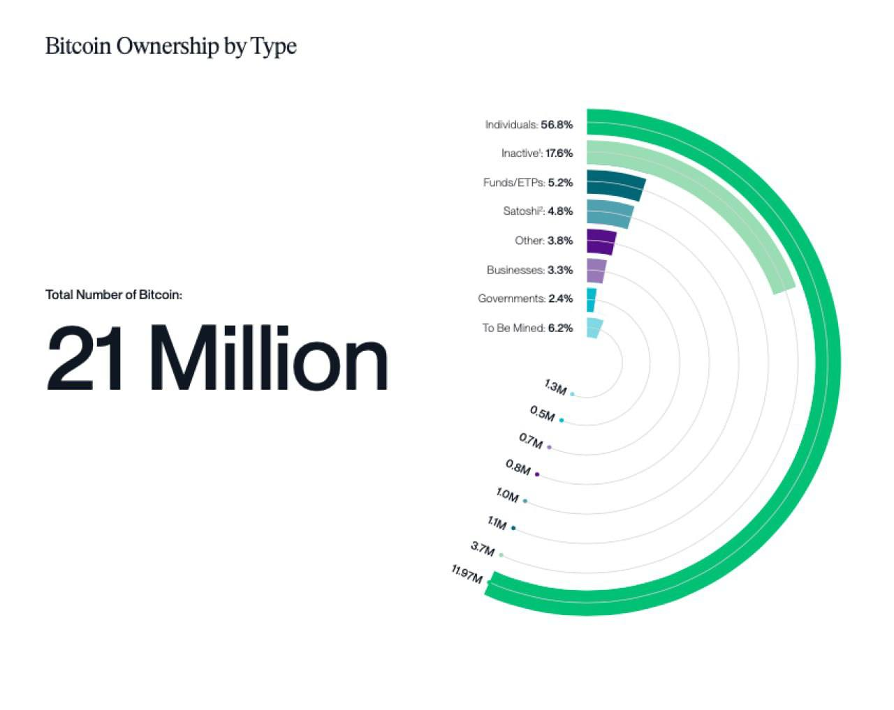
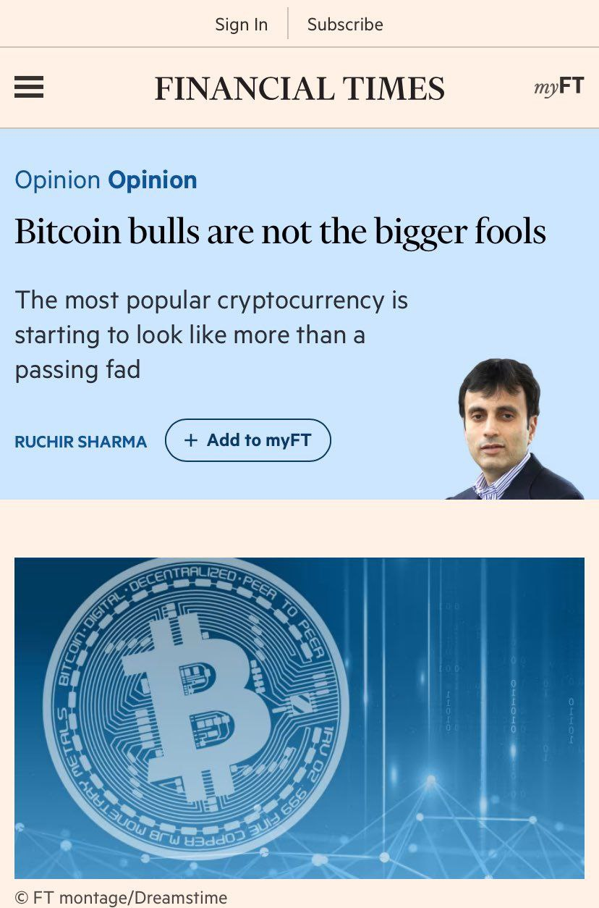
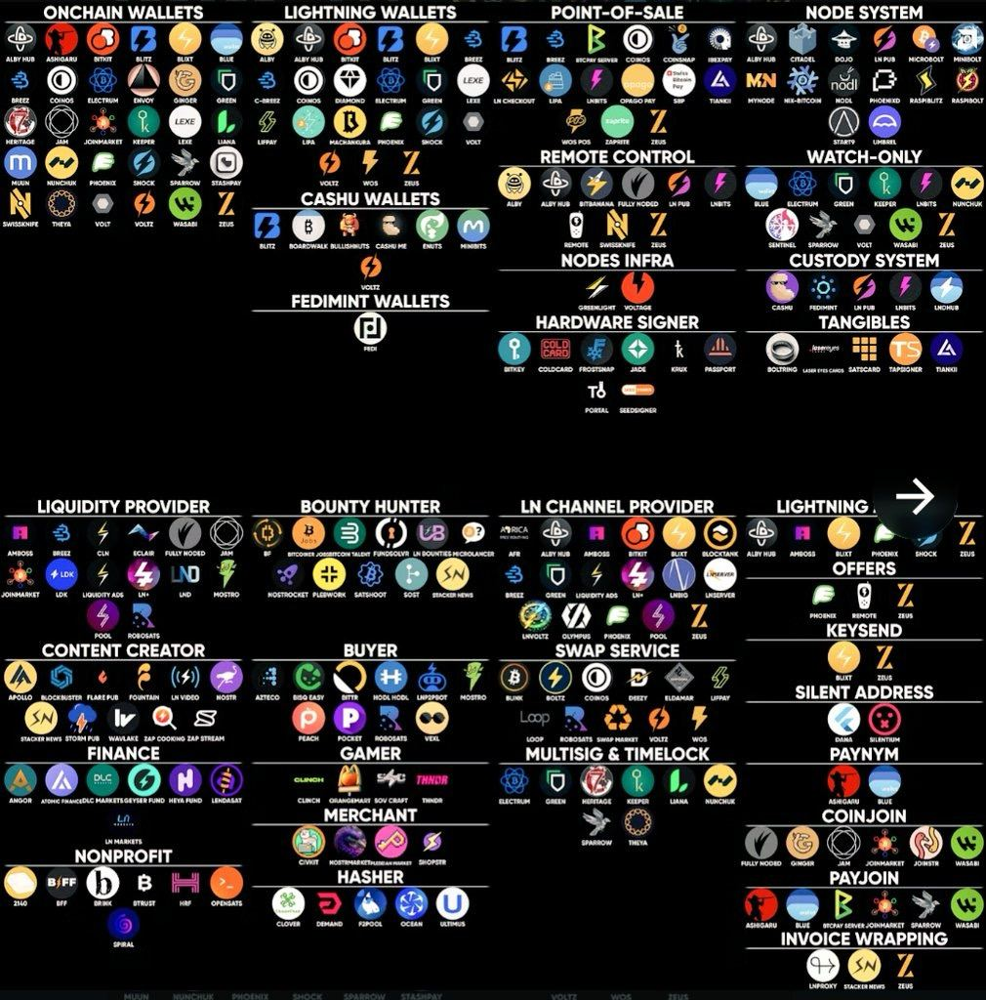
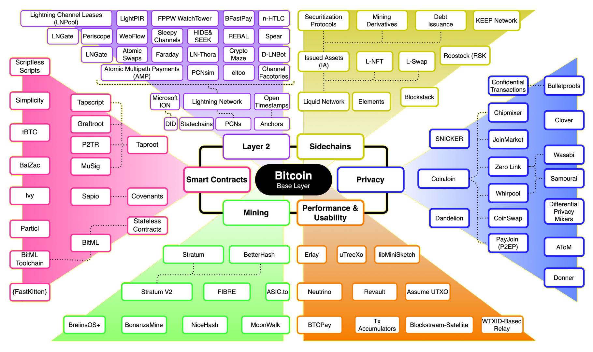
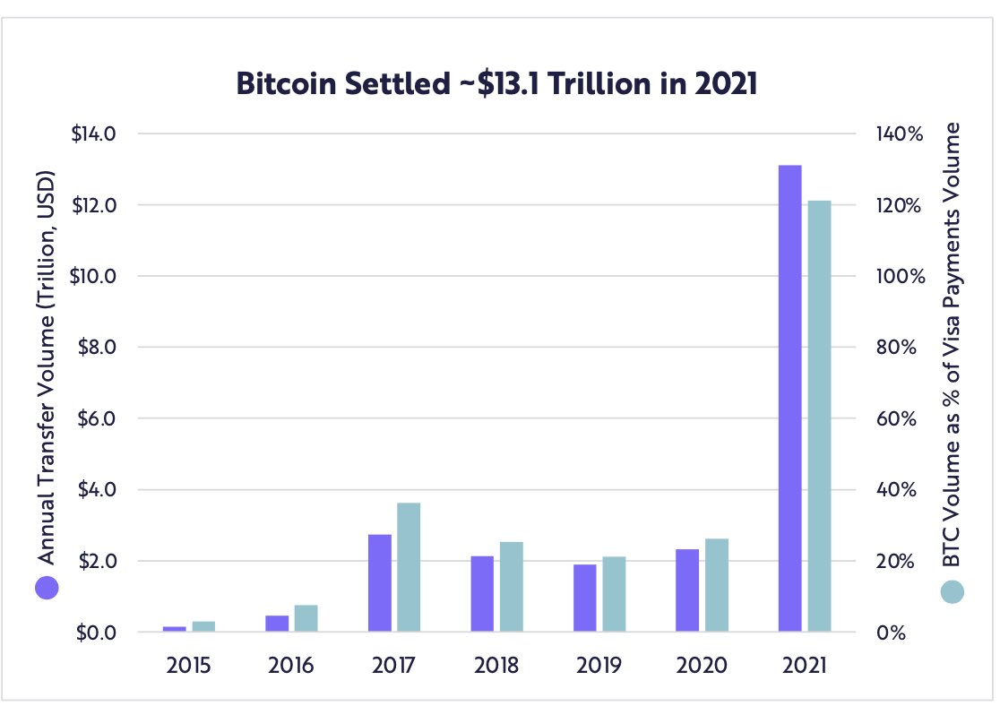
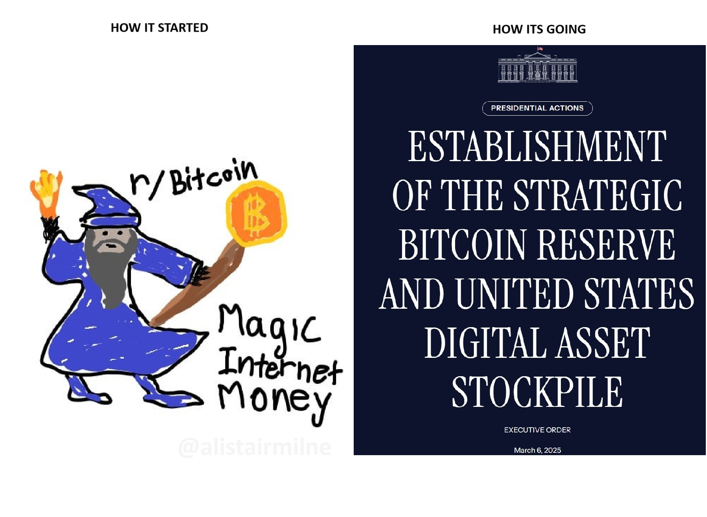
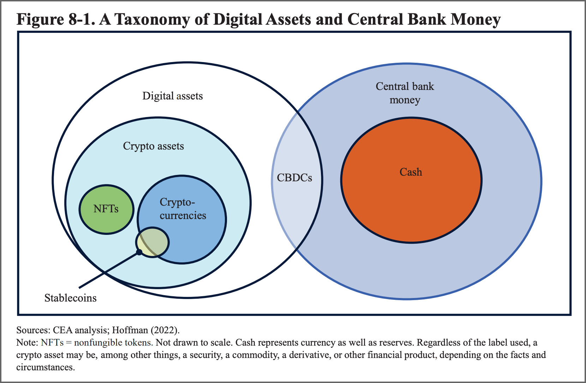
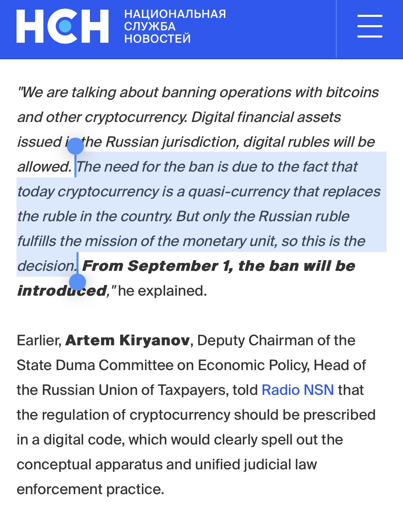

- Public page automatically published
Why is this section here?
- Bitcoin allows value and ideas to be transmitted over the internet, gaining the moniker “magic internet money”.
- This feature set is scalable and open-source.
- It is a multi-trillion-dollar digital asset class with over 100 million users, and the wider crypto ecosystem has over 500 million users.
- Individuals own most of the asset.

- It is ideal for AI agent economic action.
-
David Marcus says Bitcoin is “going to be the native currency of AI” - note he is now an industry insider, take this with an appropriate pinch of salt.
https://twitter.com/BitcoinMagazine/status/1785824384961151131
-
An old video I made in 2021

What is Bitcoin, what does it do?
- Bitcoin isn’t simply “magic internet money” anymore. It’s a swarm of open-source tools which can (in theory) accomplish a great many things.


- These newer, ancillary elements to Bitcoin are emergent right now. Some of them won’t be around until next year, and it’s questionable whether they will even work out. With that said, we aren’t convinced by the value proposition of Ethereum, and there’s enough Bitcoin tooling for us to cherry-pick useful components.
About Bitcoin
- The first blockchain was the Bitcoin network, Nakamoto 2008 some two decades after Haber et al. first described the idea. Haber 1990 Prior to Bitcoin, these structures were called ‘timechains.’ Nakamoto 2018 It can be considered a triple-entry bookkeeping system, Ijiri 1986; Faccia 2019 the first of its kind, integrating a ‘provable’ timestamp with a transaction ledger, solving the “double spend problem.” Chohan 2021; Perez 2019; Grunspan 2018 Some see this as the first major innovation in ledger technology since double entry was codified in Venice in fourteen seventy-five. Sangster 2015
- It was created pseudonymously by an individual calling themselves ‘Satoshi Nakamoto’ in 2009, as a direct response to the perceived mishandling of the 2008 global financial crisis, nakamoto2018 with the stated aim of challenging the status quo, with an uncensorable technology, to create money which could not be debased by inflation policy, and outside of the politically captured fintech incumbents. It’s interesting to note that the narrative around the use case for Bitcoin has shifted over its lifetime.
- It remains persistently associated with the political trope of freedom, Libertarians, and the cypherpunk movement that spawned it, as seen in this monologue from avowed libertarian Silk Road founder Ross Ulbricht (freed by President Trump in 2025 after lobbying from the Bitcoin industry).
- The “genesis block” which was hard-coded at the beginning of the ‘chain’ contains text from The Times newspaper detailing the second bank bailout.
- There will only ever be (just short of) 21 million bitcoins issued, of which around 19.7 million have already been minted, and around 4 million lost forever. This ‘hard money’ absolute scarcity is a strong component of the Bitcoin meme landscape. These are basically arbitrary figures though; a combination of the issuance schedule, and an ‘educated guess’ by Nakamoto:nakamoto2018
- ”My choice for the number of coins and distribution schedule was an educated guess. It was a difficult choice, because once the network is going it’s locked in and we’re stuck with it. I wanted to pick something that would make prices similar to existing currencies, but without knowing the future, that’s very hard. I ended up picking something in the middle. If Bitcoin remains a small niche, it’ll be worth less per unit than existing currencies. If you imagine it being used for some fraction of world commerce, then there’s only going to be 21 million coins for the whole world, so it would be worth much more per unit.”
- Digital scarcity is incredibly important and is explained well by software engineer Hillibrand in a podcast (this text is paraphrased): “Digital scarcity is an interesting concept that was well explained by German economist Guido Hülsmann in his book “The Ethics of Money Production,” hulsmann2008ethics published in 2007. Hülsmann stated that an economic good that is defined entirely in terms of bits and bytes is unlikely ever to be produced spontaneously on a free market, and at the time, he was right. However, the emergence of Bitcoin would soon prove that digital scarcity could indeed be achieved. Hülsmann noted that an economic good must be scarce and rivalrous, meaning there is a potential for conflict over who can utilize the resource. For example, air is abundant but still considered scarce as its availability can be limited in specific situations, leading to conflicts over its use. The concept of digital scarcity is built on the idea that information, which is fundamentally not scarce, can be made scarce through specific mechanisms. Bitcoin, for instance, addresses the double-spending problem, where a digital token could be spent more than once, by establishing a decentralized network that prevents the same coin from being used in multiple transactions. Nakamoto devised a system that allows users to establish scarcity and rivalrousness in cyberspace without relying on a single trusted third party. Instead of relying on a central authority, like a government, to determine the validity of transactions, Bitcoin relies on a network of computers known as “full nodes” that verify and enforce a set of rules. This decentralized system enables the creation of digital goods that are both scarce and rivalrous, which was previously thought to be impossible.”
- In theory, there is no barrier to access, and equality of opportunity to accumulate and save over long periods. This is not true of chains and tokens, which lock up some of their value for seed investors to cash out later. None of the blockchains since are decentralized in the same way.selvam2021blockchain Bitcoin was probably a singular event.
- Each Bitcoin can be divided into 100 million satoshis (sats), so anyone buying into Bitcoin can buy a thousandth of a pound, assuming they can find someone willing to transact that with them.
- Satoshi Nakamoto (the name of the publishing entity) disappeared from the forums forever in 2010. Bitcoin has the marks of cypherpunks and anarcho-capitalism. The IMF has recently conceded that Bitcoin poses a risk to traditional financial systems, so it could be argued that it is succeeding in this original aim. There is a detailed section on Digital Asset Risks in these pages.
- Although there were some earlier experiments (hashcash, b-money etc.), Bitcoin is the first viably decentralized ‘cryptocurrency’; the network is used to store economic value because it is judged to be secure and trusted. It is a singular event in that it became established at scale, such that it could be seen to be a fully distributed system, without a controlling entity. This is the differentiated trust model previously mentioned. This relative security is the specific unique selling point of the network. It is many times more secure than all the networks which came after based on a like-for-like comparison of transaction ‘confirmations’. This network effect of Bitcoin is a compounding feature, attracting value through the security of the system. It is deliberately more conservative and feature-poor, preferring instead to add to its feature set slowly, preserving the integrity of the value invested in it over the last decade. At the time of writing, it is a top quartile largest global currency and has settled over $19 trillion dollars in 2024, though Makarov et al. contest this, citing network overheads and speculation.makarov2021blockchain Institution-grade ‘exchange tradable funds’ or Bitcoin ETF that allow investment in Bitcoin are available throughout the world, seeing staggering popularity and immediately breaking all records, and the native asset can be bought by the public easily through apps in all but a handful of countries.

https://twitter.com/glxyresearch/status/1469039427028664320?
- Twitter link to the render loading below https://twitter.com/_Checkmatey_/status/1699581893078085705
- Only around 7 transactions per second can be settled on Bitcoin. The native protocol does not scale well, and this is an inherent trade-off as described by Croman et al. in their positioning paper on public blockchains.croman2016scaling Over time, competition for the limited transaction bandwidth drives up the price to use the network. This effectively prices out small transactions, even locking up some value below what is termed the ’dust limit’ of unspent transactions too small to ever move again.delgado2018analysis
- It is already a mature ecosystem, with enterprise-grade software stacks, and is seeing adoption as a corporate treasury asset.
The Bitcoin Network Software
- There isn’t a single GitHub which can be considered the final arbiter of the development direction, because it is a distributed community effort with some 500 developers out of a wider ‘crypto’ pool of around 9000 contributors (the vast majority are spread across disparate Ethereum and some Solana projects). Development and innovation continues but there is an emphasis on careful iteration to avoid damage to the network. Visualization of code commitments to the various open-source software repositories can be seen at Bitpaint YouTube channel.
- Bitcoin Core is the main historical effort (with around a dozen major contributors guiding the direction), but there are alternatives (LibBitcoin in C++, BTCD in Go, and BitcoinJ in Java), and as innovation on layer one slows, attention is shifting to codebases which interact with the base layer asset. Much more on these later.
- For details on how Bitcoin is created see Bitcoin Mining
Value Proposition
It seems possible that eight value propositions are therefore emerging: Bitcoin the speculative asset (or greater fool bubble [66]). Nations such as the USA, who own 30% of the asset have bid up the price of the tokens during a period of very cheap money, and this has led to a high valuation for the tokens, with a commensurately high network security through the hash rate (mining). This could be a speculative bubble, with the asset shifting to one of the other valuations below. There is more on this subject in the money section later. Gambling, the “Financial nihilism use case”, is well explained by Travis Kling in a twitter thread. “Number go up” is clearly the predominant use case at this time for both Bitcoin and crypto. Kling’s analysis paints a vivid picture of the current socio-economic climate, where financial nihilism—stemming from stifling cost of living, dwindling upward mobility, and an untenable ratio of median home prices to median income—fuels speculative gambling within the crypto space. This atmosphere encourages individuals to invest in highly speculative assets with the slim hope of substantial returns, akin to purchasing lottery tickets. In this context, Bitcoin and other cryptocurrencies become vehicles for extreme risk-taking, driven not by a belief in their fundamental value but by the desperation and desire for a quick financial win in a system perceived as increasingly rigged against the average person. Kling’s observations suggest that for many, the gamble on cryptocurrencies is less about informed investment and more about the desperate swing for the fences, embodying a form of financial nihilism that sees traditional avenues of wealth accumulation as blocked or insufficient. This speculative gamble is further fueled by the allure of significant gains, regardless of the inherent risks or the long-term sustainability of such investments. twitter link to the render loading below https://twitter.com/Travis_Kling/status/1753455596462878815 Bitcoin the (human) monetary network, and ‘emerging market’ value transfer mechanism. This will be most useful for Africa (especially Nigeria), India, and South America. There is no sense of the “value” of this network at this time, but it’s the aspect we need for our collaborative mixed reality application. For this use the price must simply be high enough to ensure that mining viably secures the network. This security floor is unfortunately a ‘known unknown’. If a global Bitcoin monetary axis evolves (as in the Money chapter later) the network would certainly require a higher rate than currently, suggestive of a higher price of token to ensure mining [67]. Bitcoin as an autonomous AI monetary network. In an era where AI actors perform tasks on behalf of humans in digital realms such as cyberspace, these AI actors will require a reliable and efficient means of transaction. AI agents can perform, transact and negotiate, and execute work contracts in near real-time. For this use, the primary requirement is not a high token price, but rather a high level of network security and scalability that can support an enormous volume of transactions. The Lightning Network of Bitcoin might be a starting point but the robustness of the system, against potential AI exploits, is yet to be confirmed. As AI systems become more complex and autonomous, there is an increasing need for decentralized AI governance mechanisms that can prevent the concentration of power and ensure ethical AI development and deployment. Bitcoin can serve as a basis for this, providing a decentralized, transparent, and immutable record of AI decisions and actions. Furthermore, Bitcoin’s proof-of-work consensus mechanism could potentially be adapted to enforce AI adherence to agreed-upon rules or norms. In this context, Bitcoin’s value extends beyond its token price and into its potential contributions to AI governance and ethics. This is Bitcoin as an AI economy. It’s notable that scaling solutions like Cashu and or RGB and Client Side Validation are likely required in addition to more established technologies like Lightning and Similar L2; this technical landscape isn’t quite ready. - Bitcoin as a hedge against future quantum computation. It has been argued that the advent of quantum computers could threaten the security of many existing cryptographic systems. Bitcoin’s open-source nature allows for the integration of post-quantum cryptographic algorithms, safeguarding it against quantum threats. In this sense, investment in Bitcoin might also be seen as an investment in a future-proof monetary network. This assertion depends on the assumption that Bitcoin’s protocol will adapt in time to incorporate such cryptographic advances before quantum computing becomes a real threat to its integrity. The practical implementation of these technologies might see a shift in the network’s dynamics, the hash rate, mining cost, and token value. Bitcoin’s value in terms of ‘sunk opportunity cost’. This refers to the value that could have been generated if the resources invested in a particular activity had been utilised elsewhere. In the context of Bitcoin, this includes the investments made in mining equipment, power, facilities, and the hiring of skilled personnel to maintain the operations. The sunk opportunity cost of Bitcoin can be substantial. It can be argued that the value of Bitcoin must take this cost into consideration, as the resources could have been allocated to other productive sectors or investments [68]. Of course, there remains the infamous sunk cost fallacy, which refers to the tendency of individuals or organizations to continue investing in a project or decision based on the amount of resources already spent, rather than evaluating the current and future value of the investment. This indeed tends to lead to a cyclical boom and bust dynamic in the industrial mining communities. The ultimate fallacy would occur if miners or investors continued to invest in mining equipment and operations solely because of the resources that have already been spent on them, and the asset simply crashes to nothing from here. It’s a shaky justification because it assumes the future is the same as the past. - Bitcoin as a flexible load in power distribution systems, and methane mitigation ‘asset’, and ‘subsidised heater’ for varied applications such as growing and drying. Again there is no price against this, but we can perhaps grossly estimate it at around half the current hash rate if 50% of the network is currently green energy. This would imply a price for the asset roughly where it is now (ie, not orders of magnitude higher or lower). - The 2023 global bank runs have awoken some companies to the risks of access to cash flows in a potential crisis [69]. Access to a small cache (in corporate treasury terms) of a highly liquid & tradable asset could allow continuity of payroll in a ‘24/7’ global context. This could avoid or at least mitigate the panic which ensues in companies when banks are forces to suddenly wind up their operations. Amusingly Ben Hunt suggests in an online article that the true value of Bitcoin can be couched in terms of it’s value simply as ‘art’. He posits that at this time the narrative is simply so seductive and powerful that people (being people) are choosing to value their involvement in the economics of the space as they might a work of art. It’s a fascinating idea, and intuitively, probably it’s right. — working/pages/Bitcoin Value Proposition.md
Goldman suggests growth opportunity and potential demonetization of gold?

- Legislators globally are starting to codify their positions on proof of work as a technology (including Bitcoin). US States are variously supporting or constricting the technology, according to state legislatures. Notably, New York has banned new carbon-intensive mining facilities for 2 years, while rust and farm belt states with energy build-out problems are providing incentives and passing legislation to protect mining data centers. At the federal level, the White House has strongly signaled their concerns about the sector in a report. Many of the points in the report are fair and true, and reflect things said in this knowledge base (which pre-dates the report). It’s worth picking out the conclusion of that section verbatim:
- “Innovation in financial services brings both risks and opportunities for the broader economy. It can challenge business models and existing industries, but it cannot challenge basic economic principles, such as what makes an asset effective as money and the incentives that give rise to run risk. Although the underlying technologies are a clever solution for the problem of how to execute transactions without a trusted authority, crypto assets currently do not offer widespread economic benefits. They are largely speculative investment vehicles and are not an effective alternative to fiat currency. Also, they are too risky at present to function as payment instruments or to expand financial inclusion. Even so, it is possible that their underlying technology may still find productive uses in the future as companies and governments continue to experiment with DLT. In the meantime, some crypto assets appear to be here to stay, and they continue to cause risks for financial markets, investors, and consumers. Much of the activity in the crypto asset space is covered by existing regulations and regulators are expanding their capabilities to bring a large number of new entities under compliance (SEC 2022). Other parts of the crypto asset space require coordination by various agencies and deliberations about how to address the risks they pose (U.S. Department of the Treasury 2022a). Certain innovations, such as FedNow and a potential U.S. CBDC, could help bring the U.S. financial infrastructure into the digital era in a clear and simple way, without the risks or irrational exuberance brought by crypto assets. Hence, continued investments in the Nation’s financial infrastructure have the potential to offer significant benefits to consumers and businesses, but regulators must apply the lessons that civilization has learned, and thus rely on economic principles, in regulating crypto assets.”
- Reading between the lines suggests that strong regulation is coming. Indeed, the SEC is now suing the major tech company in the space, Coinbase, while closing a bank servicing the sector, and signaling that stable coins may be unregistered securities in law. The report itself has no ‘teeth’ but is likely a sign of things to come. There is purportedly $2.4B entering the regulation ecosystems to enhance regulatory oversight. In actual fact, because of the nature of the federation of states, it is likely that a variety of different approaches in law will be taken across the geography and the sector seems to have responded with a shrug. As an aside, the report contains an excellent taxonomy of digital assets from Hoffman.

-
Conversely, the recent “Climate and energy implications” report is parts positive and parts negative about proof of work, and leaves the door open to a legislative clampdown. This is most notable in a White House proposal to tax Bitcoin mining at 30%, a plan which will destroy much of the US-based mining industry over the coming years. Carter provides a detailed response to the tardy scientific analysis in the report. Perhaps most interestingly it notes the potential of methane mitigation as mentioned earlier. It is conceivable that methane mitigation alone could provide a route forward for the technology. The report says: “The crypto-asset industry can potentially use stranded methane gas, which is the principal component of natural gas, to generate electricity for mining. Methane gas is produced during natural gas drilling and transmission, and by oil wells, landfills, sewage treatment, and agricultural processes. Methane is a potent GHG that can result in 27 to 30 times the global warming potential of CO2 over a 100-year time frame, and is about 80 times as powerful as CO2 over a 20-year time frame. Reducing methane emissions can slow near-term climate warming, which is why the Biden-Harris Administration released the U.S. methane emissions reduction action plan in 2021. Venting and flaring methane at oil and natural gas wells wastes 4% of global methane production. In 2021, venting and flaring methane emitted the equivalent of 400 million metric tons of CO2, representing about 0.7% of global GHG emissions. This methane is vented or flared because of the high cost of constructing permanent pipelines or other infrastructure to bring it to market.”
-
The EU has just voted to add the whole of ‘crypto’, including PoW, to the EU taxonomy for sustainable activities. This EU-wide classification system provides investors with guidance as to the sustainability of a given technology and can have a meaningful impact on the flows of investment. With that said the report and addition of PoW is not slated until 2025, and it is by no means clear what the analysis will be by that point. Meanwhile they’re tightening controls of transactions, on which there will be more detail later. For its part, the European Central Bank has come out in favor of strong constraints on crypto mining, and call out Bitcoin as a threat to society.
https://twitter.com/TuurDemeester/status/1847512241173582058
-
They use the widely discredited “digiconimist” estimates to assert that mining operations are disproportionately damaging to the environment.
-
We have seen that China has cracked down hard on the technology, banning mining and pressuring holders of the assets. They have unwound this somewhat, and based on past experience it seems that they will continue to nuance their position as they seek adoption of their own digital currency. As much as 20% of all mining activity is now suspected to take place within China.
-
Russia is moving to ban the whole technology, most especially Bitcoin, in response to capital flight concerns.

-
In India, there has been confusion for years as more “local” law vies with confusing central government signaling. It has variously been banned and unbanned, and is now subject to punitive tax. The central bank of India is strongly in favor of a complete ban. Ajay Seth, secretary of the Finance Ministry’s Department of Economic Affairs recently said it: “We have gone through a deep dive consulting with not just the domestic and institutional stakeholders but also organizations like IMF and World Bank… Simultaneously we are also beginning our work for some sort of a global regulation (to determine) what role India can play… Whatever we do, even if we go to the extreme form, the countries that have chosen to prohibit, they can’t succeed unless there is a global consensus.”
-
It feels like a global political response is just around the corner, but reputable voices in the community suggest that it always feels this way.
Risks and mitigations
- Looking across the whole sector, this paragraph from the Bank of International Settlement (BIS) sums everything up:
- [“…it is now becoming clear that crypto and DeFi have deeper structural limitations that prevent them from achieving the levels of efficiency, stability or integrity required for an adequate monetary system. In particular, the crypto universe lacks a nominal anchor, which it tries to import, imperfectly, through stablecoins. It is also prone to fragmentation, and its applications cannot scale without compromising security, as shown by their congestion and exorbitant fees. Activity in this parallel system is, instead, sustained by the influx of speculative coin holders. Finally, there are serious concerns about the role of unregulated intermediaries in the system. As they are deep-seated, these structural shortcomings are unlikely to be amenable to technical fixes alone. This is because they reflect the inherent limitations of a decentralised system built on permissionless blockchains.“]
- Lightning and Similar L2 is still considered to be experimental and not completely battle tested. There have been various attacks and a major double spend attack may be possible, but there have been no major problems in the years it’s been running with careful design choices and cybersecurity best practice it it likely a production ready component of our planning.
More technology details
- Bitcoin Technical Overview is an in depth primer
- Bitcoin is further extended by Lightning and Similar L2 and BTC Layer 3 expands on the emergent tech which underpins my use of the asset
Politics, Law, Privacy
- Legislators globally, are starting to codify their positions on proof of work as a technology (including Bitcoin). US States are variously supporting or constricting the technology, according to state legislatures. Notably New York has banned new carbon intensive mining facilities for 2 years, while rust and farm belt states with energy build-out problems are providing incentives and passing legislation to protect mining datacenters. At the federal level the white house has strongly signalled their concerns about the sector in a report. Many of the points in the report are fair, and true, and reflect things said in this book (which pre-dates the report). It’s worth picking out the conclusion of that section verbatim: [“Innovation in financial services brings both risks and opportunities for the broader economy. It can challenge business models and existing industries, but it cannot challenge basic economic principles, such as what makes an asset effective as money and the incentives that give rise to run risk. Although the underlying technologies are a clever solution for the problem of how to execute transactions without a trusted authority, crypto assets currently do not offer widespread economic benefits. They are largely speculative investment vehicles and are not an effective alternative to fiat currency. Also, they are too risky at present to function as payment instruments or to expand financial inclusion. Even so, it is possible that their underlying technology may still find productive uses in the future as companies and governments continue to experiment with DLT. In the meantime, some crypto assets appear to be here to stay, and they continue to cause risks for financial markets, investors, and consumers. Much of the activity in the crypto asset space is covered by existing regulations and regulators are expanding their capabilities to bring a large number of new entities under compliance (SEC 2022). Other parts of the crypto asset space require coordination by various agencies and deliberations about how to address the risks they pose (U.S. Department of the Treasury 2022a). Certain innovations, such as FedNow and a potential U.S. CBDC, could help bring the U.S. financial infrastructure into the digital era in a clear and simple way, without the risks or irrational exuberance brought by crypto assets. Hence, continued investments in the Nation’s financial infrastructure have the potential to offer significant benefits to consumers and businesses, but regulators must apply the lessons that civilization has learned, and thus rely on economic principles, in regulating crypto assets.”]
- Reading between the lines suggest that strong regulation is coming. Indeed the SEC is now suing the major tech company in the space, Coinbase, while closing a bank servicing the sector, and signalling that stable coins may be unregistered securities in law. The report itself has no ‘teeth’ but is likely a sign of things to come. There is purportedly $2.4B entering the regulation ecosystems to enhance regulatory oversight. In actual fact, because of the nature of the federation of states it is likely that a variety of different approaches in law will be taken across the geography and the sector seems to have responded with a shrug. As an aside the report contains an excellent taxonomy of digital assets from Hoffman.
- Conversely the recent “Climate and energy implications” report is parts positive and parts negative about proof of work, and leaves the door open to a legislative clampdown. This is most notable in a White House proposal to tax Bitcoin mining at 30%, a plan which will destroy much of the US based mining industry over the coming years. Carter provides a detailed response to the tardy scientific analysis in the report. Perhaps most interestingly it notes the potential of methane mitigation as mentioned earlier. It is conceivable that methane mitigation alone could provide a route forward for the technology. The report says: [“The crypto-asset industry can potentially use stranded methane gas, which is the principal component of natural gas, to generate electricity for mining. Methane gas is produced during natural gas drilling and transmission, and by oil wells, landfills, sewage treatment, and agricultural processes. Methane is a potent GHG that can result in 27 to 30 times the global warming potential of CO2 over a 100-year time frame, and is about 80 times as powerful as CO2 over a 20-year timeframe. Reducing methane emissions can slow near-term climate warming, which is why the Biden-Harris Administration released the U.S. methane emissions reduction action plan in 2021. Venting and flaring methane at oil and natural gas wells wastes 4% of global methane production. In 2021, venting and flaring methane emitted the equivalent of 400 million metric tons of CO2, representing about 0.7% of global GHG emissions. This methane is vented or flared, because of the high cost of constructing permanent pipelines or other infrastructure to bring it to market.“]
- The EU has just voted to add the whole of ‘crypto’, including PoW, to the EU taxonomy for sustainable activities. This EU wide classification system provides investors with guidance as to the sustainability of a given technology, and can have a meaningful impact on the flows of investment. With that said the report and addition of PoW is not slated until 2025, and it is by no means clear what the analysis will be by that point. Meanwhile they’re tightening controls of transactions, on which there will be more detail later. For it’s part the European Central Bank has come out in favour of strong constraints on crypto mining. They use the widely discredited “digiconimist” estimates to assert that mining operations are disproportionately damaging to the environment.
- We have seen that China has cracked down hard on the technology, banning mining and pressuring holders of the assets. They have unwound this somewhat, and based on past experience it seems that they will continue to nuance their position as they seek adoption of their own digital currency. As much as 20% of all mining activity is now suspected to take place within China.
- In India there has been confusion for years as more “local” law vies with confusing central government signalling. It has variously been banned and unbanned, and is now subject to punitive tax. The central bank of India is strongly in favour of a complete ban. Ajay Seth, secretary of the Finance Ministry’s Department of Economic Affairs recently said [“We have gone through a deep dive consulting with not just the domestic and institutional stakeholders but also organizations like IMF and World Bank… Simultaneously we are also beginning our work for some sort of a global regulation (to determine) what role India can play… Whatever we do, even if we go to the extreme form, the countries that have chosen to prohibit, they can’t succeed unless there is a global consensus”]
- It feels like a global political response is just around the corner, but reputable voices in the community suggest that it always feels this way.
Scams and Grifts
- In the wake of the rampant crime spree by Sam Bankman-Fried and his top teams at Alameda research and the Bahamas registered exchange ‘FTX’ the whole industry has suffered, and will continue to suffer, seismic shocks. There is a chance the sector will never recover, and that we have already seen the top of the hype bubble. Fortunately this doesn’t diminish our use cases for these technologies, as we were never planning to speculate with the asset, but rather use the network. As a side note it is generally accepted that convention money is far more popular for crime.
- COPA vs Craig Wright: The Identity Trial (lopp.net) - Craig Wright, a man who has claimed to be Satoshi Nakamoto for years, was found not to be the creator of Bitcoin in a UK court in 2024.
- Staggering grift in 2024 StarPlatinum on X: “The biggest Solana scandal since FTX A founder steps down $200M drained from crypto Here’s the story of how Meteora and JUP got caught in the LIBRA scam🧵 (1/9) https://t.co/WrU7bUMHXg” / X
Digital assets
- For digital assets more generally it is useful to look at the recent “whole government executive order” signed by President Biden early in 2022. It was mainly framed in terms of “responsible innovation, and leadership” in the new space. The resulting, “Comprehensive Framework for Responsible Development of Digital Assets” is a product of multi agency collaboration and can be seen as 9 reports and a summary document, and has been long anticipated. The summary itself is neither particularly comprehensive nor a framework, and mainly serves to identifies high level risks, aspirations, and challenges, and strongly hints toward eventual development of a “digital dollar” (CBDC, expanded later).
- The risks section of the original executive order shows how legislators are framing this, so it’s useful to break down here.
- Consumer and business protections. This is likely to pertain to custodians and is much needed. Misselling is rife. Security presents a challenge.
- Systemic risk, and market integrity are a concern. The legislators clearly worry about contagion risks from the sector.
- Illicit finance (criminality and sanction busting etc) are a concern, but not particularly front and centre. Criminality in 2021 was a mere 0.15% of transactions according to Chainalysis, but this number varies year to year. There are claims that Iran have begun official overseas buying with cryptocurrencies, but again, the numbers are small. One of the better sections of the work is the US treasury department’s recently published ‘National Risk Assessments for Money Laundering, Terrorist Financing, and Proliferation Financing’. This is a comprehensive report and speaks to careful research across the space. It is broken into three parts. Perhaps surprisingly, while they do see activity in these areas, they do not rate the risk as very significant. Cash remains the main problem for illicit funding. There is some talk that the nature of public blockchain analysis allows greater oversight of these tools and that this is to the advantage of government and civil enforcement agencies.
- Highlighting the need for international coordination suggests they are mindful of jurisdictional arbitrage. The partial regulatory capture of these technologies, where activity flows to globally more lenient legislative regimes, continues to be a concern. Many of the centralised exchanges for instance are located in tax havens such as Malta. As the world catches up with these products it is likely that this will be smoothed out.
- Climate goals, diversity, equality and inclusion are mentioned. It seems that the “environment” aspect of ESG is more important then “social” and “governance” at this time.
- Privacy and human rights are mentioned.
- Energy policy is highlighted, including grid management and reliability, energy efficiency incentives and standards, and sources of energy supply.
- The latest summary report resulting from the above guidance actually adds little tangible meat to the bones. This possibly reflects the complexity of these issues. The recommendations seem to be broadly as follows, and are really a copy/paste of the executive order.
- Carry on doing research into central bank digital currencies, but there’s no particular rush.
- Support development of better instant payment methods both at home and globally.
- Ensure consumer and systemic protections.
- More monitoring, civil and criminal prosecutions.
- Issue more rules and clarity in response to risks (this is actually likely net positive as rules are currently unclear).
- Improve global reporting on users (KYC/AML).
- The government rhetoric to date in the USA can be seen to be converging on an understanding of the technology, at different rates in different parts of government. One thing that seems to shine through is their own perception of their global leadership on legislation on these matters. They seems to assume that what they decide will guide the world, and this may be true through their KYC/AML pressures.
- A recent proposed bi-partisan bill in the USA will likely help inform global law, though it is unlikely to pass itself. It encourages the use of Bitcoin as a medium of exchange by applying a tax exemption on transactions of less than $200. The issue of whether an asset is a commodity (a raw material thing) or a security (a promise) is left to a couple of major government agencies to unpick, with corresponding reporting requirements. Crucially for this book these nascent bills all regard both Bitcoin and Ethereum as sufficiently decentralised to qualify as commodities, meaning they would enjoy more lenient oversight. Far more likely to pass is the proposed DCCPA bill which has senior lawmaker support and would see commodities in the space regulated in such a way that trading of it could be halted in the USA. In this line of policy, exchanges will be required to do far more reporting, and would be penalised for trading against their customers. DOAs and DeFi are the big potential losers. In a maddening twist the Office of Government Ethics in the USA has banned anyone who owns digital assets from working on the legislation. This is an exceptional move and likely to result in poorly crafted laws in the first instance.
- The most recent and troubling example is the US ban on any Ethereum assets which have been through a “mixer service” that obfuscates history. This is a huge constraint on the code and smart contract itself, not just sanctions against individuals. It has ‘free speech’ and constitutional implications. More such actions and arrests of developers are feared. It has led to Circle (who issue the USDC stablecoin) blacklisting every address sanctioned by the US government. Centrally issued digital assets are obviously neither uncensorable nor permissionless. This intersects (again) with the whole question of what decentralisation means and how effective it can be in it’s stated goal of circumventing global policies.
Bitcoin specific risks
- The block reward is reduced every 4 years (epochs). This means a portion of the mining reward is trending to zero, and nobody knows what effect this will have on the incentives for securing the network through proof of work. It is increasingly being discussed as the major eventual problem for the network.
- Stablecoins are a vital transitional technology (described later) but do not meaningfully exist yet on the Bitcoin network. This may change.
- Bitcoin lacks privacy by design. All transactions are publicly viewable. This is a major drag to the concept of BTC as a money. Upgrade of the network is possible, and has indeed been achieved for a Bitcoin fork called Litecoin.
- The Lightning network (described later) has terrible UX design at this time.
- The basic ‘usability’ of the network is still poor in the main. Any problems which users experience demand a steep learning curve and risk loss of funds. There is obviously no technical support number people can call.
- Only around one billion unspent transactions can be generated a year on the network. This means that it might become impossible for everyone on the planet to have their own Bitcoin address (with it’s associated underpinning UTXO).
- Chip manufacture is concentrated in only a few companies and countries, as identified by Matthew Pines.
- Potential constraints on monetary policy flexibility.
- Future protocol changes.
- Unanticipated effects on the domestic and international energy system.
- Vulnerability to adversary attacks are widely studied, and still pretty much completely speculative because of the complex nature of the attack surface.
- Mining tends toward economy of scale concentration. Many are already on their own specialised network to connect to one another.
- Future hard forks. There will doubtless be pressure to fork the code to add inflation, or ESG mitigations, or to fix the UNIX clock issue in 2106. Each fork is a risk.
- Other unknown, unanticipated risks given Bitcoin’s limited 15-year history.
- There is a “non-zero” chance that Bitcoin is a complex government intelligence agency construct, much like Crpto AG was toward the end of the last century.
Adoption
- 90 Million People Use Cryptocurrency in Nigeria - Report | Investors King
- 2023 Independent Reserve Cryptocurrency Index shows Singaporeans are still actively investing in crypto despite hit in overall confidence: /PRNewswire/ — In the latest study[1] by Independent Reserve, Singapore’s first regulated cryptocurrency exchange for all investors, Singaporeans[2] are still…
- Despite a recent dip in overall confidence, the 2023 Independent Reserve Cryptocurrency Index shows that Singaporeans are still actively investing in cryptocurrency. The study found that Singaporeans are most interested in investing in Bitcoin, Ethereum, and Litecoin.
- Bitnob African exchange
- Noones peer2peer for Africa
- Africa leads the world in peer to peer bitcoin
- Econometrics of adoption in USA
Mining and energy
- Bitcoin uses more energy than sweden
- THE ‘RIGHT TO MINE’ BITCOIN📷 IS NOW LAW IN THE STATE OF ARKANSAS!
- Bitcoin is a more sustainable energy than EVs, and significantly less fossil fuel.
- Batton’s energy tracker
- sazmining hosted hydro
Decentralised storage
Layer 2 and sidechains
- RGB is a smart contract platform that is scalable, private, and interoperable with Bitcoin and Lightning Network. It is possible to issue assets, create NFTs, and run DAOs on RGB.
- RGB 20 longhand manual
- RGB22
- RGB report
- Taproot Assets
- Ark
- Zerosync bitcoin rollup proofs
- 10101 custodial DLC trading
Lightning
- Setup lnbits and lightningtipbot
- GitHub - ln-vortex/ln-vortex: Lightning and Taproot enabled collaborative transactions (other)
- This is a node management software for large Lightning Network nodes. It provides a way to automate workflows, manage code changes, and track work progress.
- L402 lightning reverse proxy with LND for AI
- Cleveland bank paper on lighting improving Bitcoin
Other interesting links
- How Value-for-Value Fixes the Monetization of Information | dergigi.com,Thoughts about Bitcoin and other things.
- bitcoin secure multisig setup (bsms)
- Crypto Wave Gaining Momentum In Germany: Network Of 1,200 Banks To Offer Bitcoin
- Hal Finney’s theory of bitcoin backed banks
- bitcoin-mining-analogy-beginners-guide
- Introducing Floresta, a Utreexo-powered Electrum Server implementation
- Fedimint Hackathon Winners Announced
- A light introduction to ZeroSync
- Deception, exploited workers, and cash handouts: How Worldcoin recruited its first half a million test users
- Cashu rust implementation
- Quantum miners
- address_index and deterministic paths (BIP44)